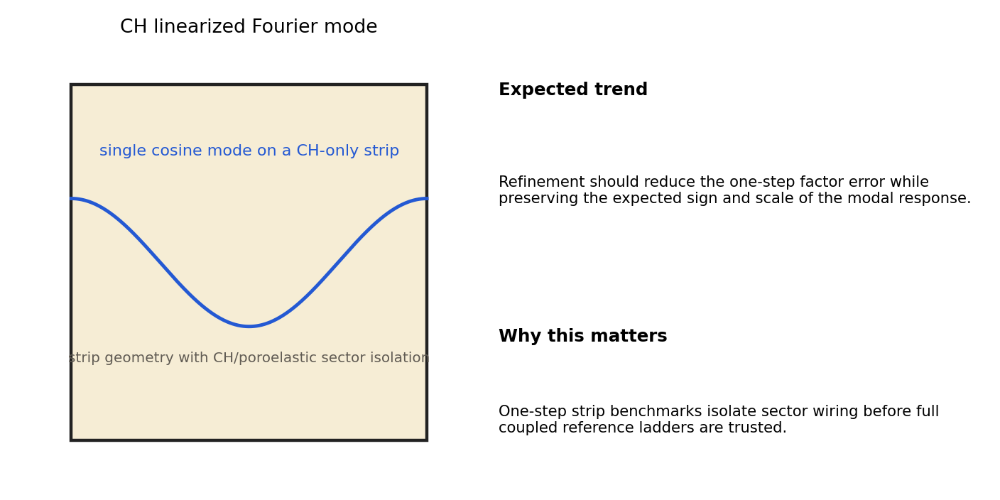
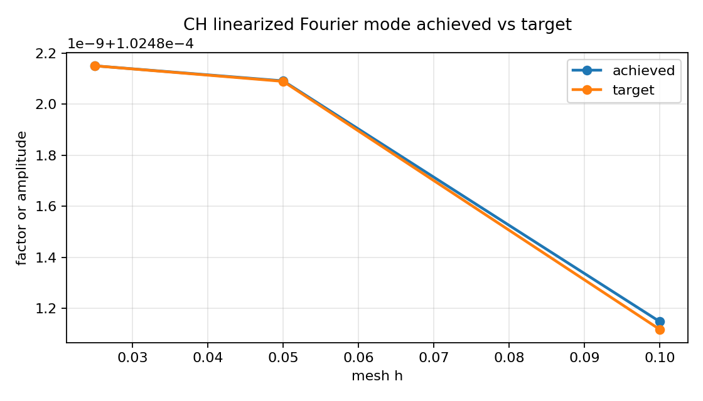
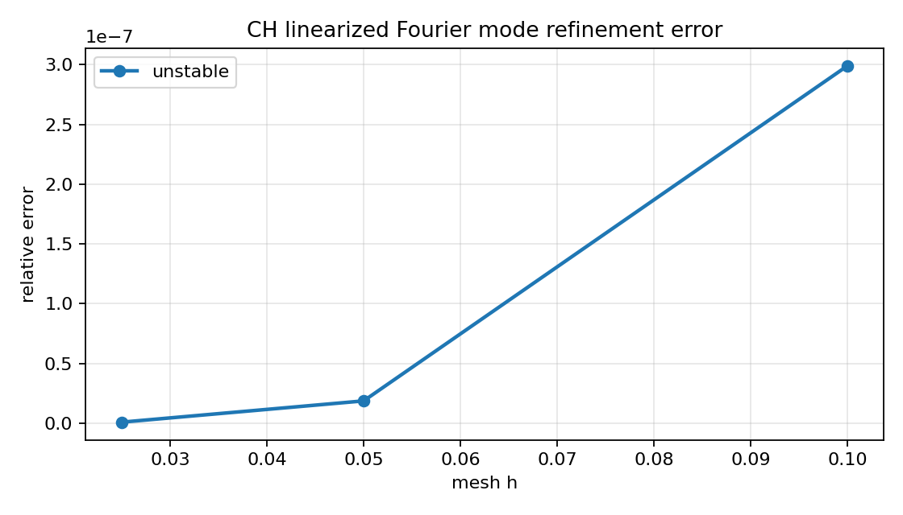
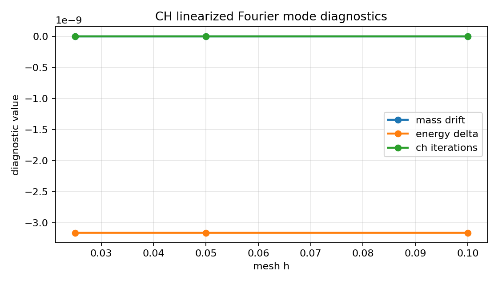

Benchmark
CH Linearized Fourier Mode
Family: analytic-benchmarks
One-step CH Fourier-mode amplification against the linearized analytic factor.
Target and Success Criteria
target_kind: Analytic
Tier: full
Unknowns active: pf, mu
Frozen terms: mechanics, pressure, theta
Comparison grammar: Achieved / Target
Tickets: VV-005
What This Benchmark Verifies
This benchmark checks one-step CH amplification against the linearized analytic Fourier-mode factor.
Benchmark Narrative
Narrative
Physical Problem
A single cosine mode is initialized on a strip so one step of the isolated sector can be compared against a closed-form or weak-limit amplification target.
Narrative
Target Definition
The target is the closed-form one-step Fourier-mode amplification factor from the linearized CH limit. Stable and unstable modes should both track their predicted amplitude change under refinement.
Narrative
Why These Observables
The strip schematic shows the single-mode setup, the achieved-versus-target plot uses the raw amplitudes extracted from the run, the diagnostic plot exposes mass drift and energy change, and the refinement-error plot summarizes convergence toward the analytic factor.
Narrative
How To Read The Error
Monotone reduction in relative amplitude error is the main success signal. Large mass drift or the wrong energy trend indicates the CH update itself is broken rather than merely coarse.
Narrative
Reference Qualification
The target factors are computed directly from the benchmark harness and evaluated on the same strip geometry and time step as the numerical run.
Narrative
Limitations
This is a one-step small-amplitude benchmark. It isolates sector behavior and does not replace the longer retained-accuracy ladders.
unstable_finest_error
pass
Setup Schematic
figure

Setup schematic for ch linearized fourier mode and the expected modal trend.
plots/setup-schematic.png
Raw Run Evidence
Extracted Observables
plot

Achieved modal factor or amplitude versus the analytic target across refinement levels.
plots/linear-mode-achieved-vs-target.png
Target Comparison
plot

Relative factor error across refinement levels.
plots/linear-mode-error-vs-h.png
Error Summary
plot

Supporting diagnostics extracted from the one-step run.
plots/linear-mode-diagnostics.png
Scalar Summary
| Label | Value | Unit | Comparison | Threshold | Severity |
|---|---|---|---|---|---|
| unstable_finest_error | 9.87218e-10 | 0 | 0 | pass |
Evidence Table
| Label | Metric | Comparison | Threshold | Severity |
|---|---|---|---|---|
| unstable_finest_error | relative_amplitude_error | 9.87218e-10 | small | pass |
Series Overview
| Plot | Group | Observable | Case | Level | Target |
|---|---|---|---|---|---|
| unstable_0 | analytic_target | unstable | unstable | 0.1 | analytic target |
| unstable_1 | analytic_target | unstable | unstable | 0.05 | analytic target |
| unstable_2 | analytic_target | unstable | unstable | 0.025 | analytic target |
Cases
Case
unstable
Single-mode case `unstable` on the isolated strip setup.